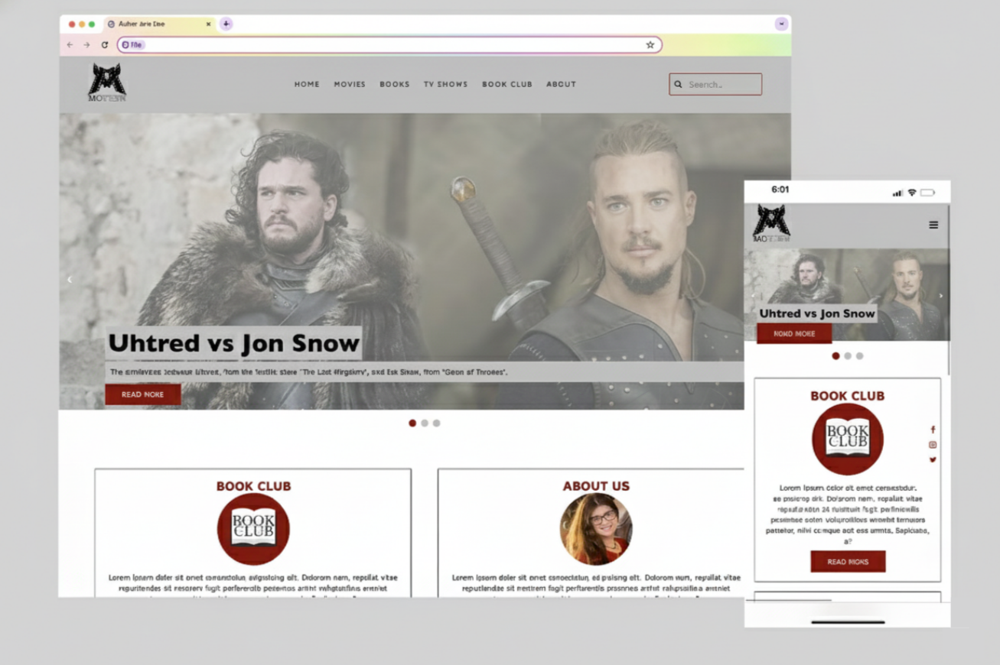
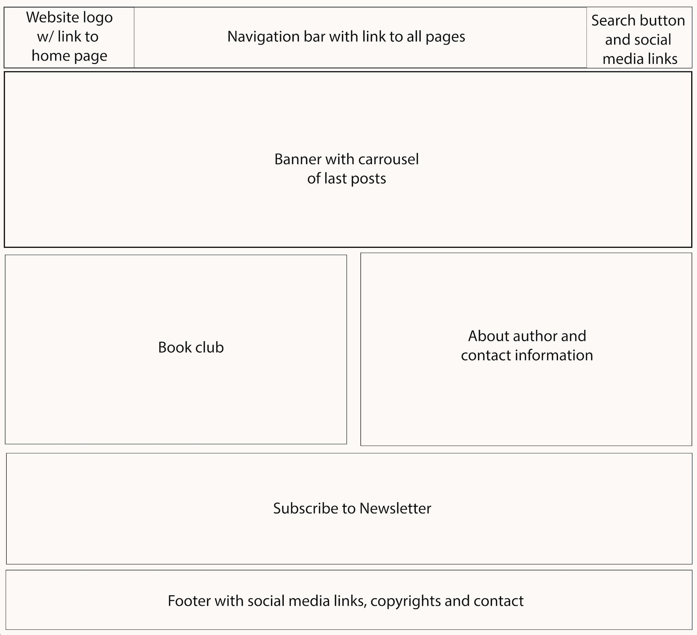
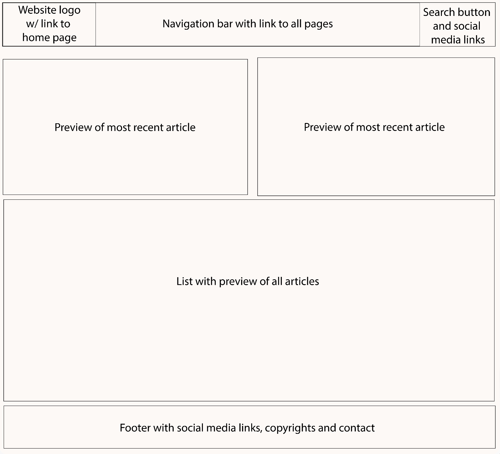
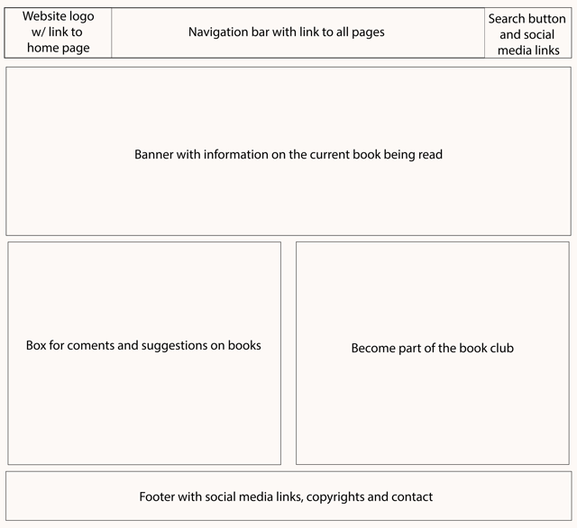
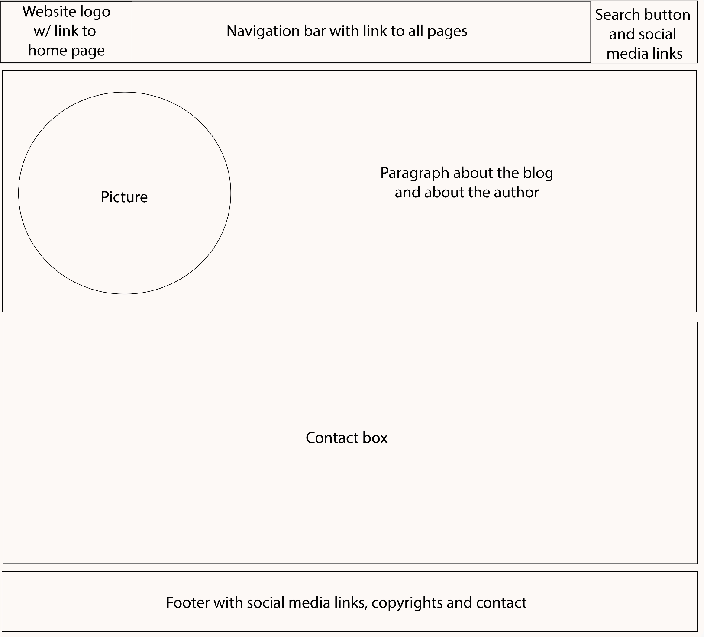

Web Development | UX Design | UX Research | UI Design

Moview is a project developed by me as part of the curriculum of the Informatics course at the SUNY at Albany. It started with a simple frustration: despite the endless amount of content about movies, books, and TV shows online, finding thoughtful, well-curated perspectives often felt overwhelming and disconnected.
As someone passionate about storytelling, both as a filmmaker and a writer, I came across the idea to create a space that reflects a deeper way of engaging with content. Not just consuming it, but analyzing it, sharing it, and discussing it with others.
This project explores the design of a content-driven website that combines reviews, recommendations, and community interaction into one cohesive platform. The goal was to move beyond the idea of a traditional blog and create something that feels curated, personal, and engaging.
Today’s entertainment experience is fragmented, making users often rely on multiple platforms to read reviews, discover new content, and engage in discussions
At the same time, many existing platforms prioritize speed and volume over depth. Reviews are reduced to quick ratings, and meaningful analysis is harder to find, which creates even more challenges, such as scattered experiences, lack of authentic, thoughtful content, limited opportunities for interaction and discussion, and last but not least, overwhelming interfaces loaded with ads.
The solution was to design a platform that brings together content and interaction in a more intentional way.
The website is structured around three main areas—movies, books, and TV shows—each offering reviews, recommendations, and insights. Instead of isolating these elements, the design connects them through a clear and intuitive navigation system.
The homepage acts as a curated entry point, guiding users toward recent and relevant content without overwhelming them.
To extend beyond passive reading, the platform introduces a book club feature, creating a shared experience where users can follow along, reflect, and engage with others. Additional features such as entertainment news and curated lists help keep the content fresh and dynamic.
The overall design focuses on clarity, readability, and a strong visual identity, ensuring that users can either quickly browse or dive deeper depending on their needs.
This project redefines what a personal content platform can be by transforming it into a more structured and engaging experience.
By consolidating multiple content types into one space, the design simplifies how users discover and explore media; encourages more thoughtful engagement with content; bridges the gap between individual consumption and shared experience and creates a stronger connection between the creator and the audience
That allows the platform to become more than functioning as just a blog; the platform becomes a space for discovery, reflection, and interaction.
To better understand user behavior, I explored how individuals engage with entertainment content—how they discover it, what they value in reviews, and how they interact with platforms.
Through these insights, I developed personas representing a range of users, from casual browsers looking for quick recommendations to more engaged users interested in deeper analysis and discussion.
Exploring multiple perspectives helped reveal a key insight: users don’t all engage with content in the same way. Some prefer speed and simplicity, while others seek depth and connection.
This understanding guided the design toward a flexible experience that supports both.
The research highlighted several important patterns:
Thoughtful, well-written reviews are more engaging than simple ratings or summaries
Some users want quick recommendations, while others prefer in-depth analysis
Overly complex or cluttered interfaces discourage exploration
Users are more likely to return when they can engage with content or others
Reviews, recommendations, and discussions are rarely integrated into one experience
These insights shaped the platform's overall direction, emphasizing clarity, balance, and engagement.




This project demonstrates how intentional design can transform a simple idea into a more meaningful user experience.
By bringing together reviews, recommendations, and interactive features, the platform addresses the fragmented nature of existing entertainment spaces and offers a more cohesive alternative.
It also highlights the value of designing for both content and connection—creating an experience that supports not just discovery, but reflection and shared engagement.
While further testing would help refine the solution, this project lays the foundation for a platform that turns passive consumption into an active, connected experience.